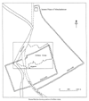
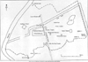

A.
Introduction
1.Babylon is unquestionably one of the most
important archaeological sites in the world,
and was the capital city of two of the most
famous kings of antiquity, Hammurabi (1792-1750
BC) who introduced the world’s first
lawcode, and Nebuchadnezzar (604-562 BC) who
built the Hanging Gardens of Babylon, one
of the Seven Wonders of the World. Excavations
at Babylon during the last 150 years have
uncovered some parts of the city but much
remains buried beneath the earth and there
is still a great deal to discover about the
ancient city. In view of the historical and
archaeological significance of Babylon, recent
allegations of damage to the site during its
occupation as a military camp are particularly
serious. It was as a result of these allegations
that a meeting was arranged at Babylon in
the period 11 – 13 December.
2.
The meeting was convened prior to the handover
of the archaeological site of Babylon by
the coalition forces to the State Board
of Antiquities and Heritage in the Iraqi
Ministry of Culture which is scheduled for
15th January 2005. The meeting was supposed
to include a committee of Iraqi archaeologists,
Polish archaeologists accompanying the Polish
forces in Babylon, and representatives of
the coalition forces. UNESCO was asked to
send a representative, but declined to do
so for security reasons. I was invited to
attend as an independent observer by His
Excellency Mufid al-Jazairi, the Iraqi Minister
of Culture. Professor MacGuire Gibson of
the University of Chicago and Professor
John Russell, formerly the advisor to the
Minister of Culture, were also invited to
attend but were unable to do so.
3.
A military camp was first established at
Babylon by American forces in April 2003.
Command of the camp was officially handed
over to Polish forces in September 2003,
but Polish forces were also present before
this time. During most of this period infrastructure
works to support the military camp were
the responsibility of Kellog, Brown and
Root (KBR).The camp (150 has) was established
in the middle of the archaeological site
(900 has) and surrounded the central enclosed
part of the ancient city. I was informed
that the camp had originally contained 2000
soldiers but that figure had now been reduced
to less than 400.
4.
In preparation for the meeting the three
archaeologists attached to the Polish forces
(Miroslav Olbrys, Agnieszka Dolatowska and
Tomasz Burda) had prepared a long (more
than 500 pages) document entitled Report
Concerning the Condition of the Preservation
of the Babylon Archaeological Site.
As the title suggests, this document is
essentially a condition report, and it contains
many photographs that provide an invaluable
record of the state of the site in November
2004. In my own report (below), frequent
cross-reference is made to the Polish Report. As it is a condition report,
many instances of interference or damage
are included in the Polish Report,
but they are not highlighted and there is
no attempt to list them, to describe them
in detail, to estimate when they occurred
or to suggest who was responsible.
5.
At the opening session of the meeting, Mr
Borhan Shaker of the State Board of Antiquities
and Heritage read out a statement from the
Minister of Culture in which amongst other
things he asked me as an independent observer
to write a separate report.
6.
After discussion during the course of the
meeting, it was agreed that 3 reports focusing
on the archaeological site of Babylon should
be made available at or soon after the time
of the handover:-
(i) The Polish Report referred
to in 4) above.
(ii) A report by the Iraqi side detailing
all instances of damage to the archaeological
site since its occupation by coalition forces.
(iii) My report referred to in 5) above.
7.
It should be stressed that my own report
does not in any way purport to be a comprehensive
assessment of damage to the site or interference
with it since its occupation by coalition
forces. That would be an impossible undertaking
on the basis of a 2 ½ day visit.
Nevertheless, in my opinion there has been
substantial damage and listed below are
examples of this damage. All the following
instances were pointed out to members of
the committee during a tour around the site
led by Dr Maryam Umran Musah and her two
assistants Mr Haidar Abdul Wahid and Mr
Raed Hamed. This list should not be seen
as exhaustive, but is indicative of the
types of damage caused. Following on from
the instances of damage pointed out by Dr
Maryam (section B), I have added some comments
and observations of my own in section C
(Conclusions).
B.
Review of Affected Areas
North-East
Corner of Inner City (Area to East of Lake)
Dr
Maryam reported that there were 5 cuttings
in this area. The cuttings are into what
may be old spoil-tips, perhaps from the
excavations of R.Koldewey in the early 20th
century, but this would need to be verified.
We were shown four of the cuttings: -
1. A cutting c. 35m x 20m, depth 6m (Polish Report, pp.43-44, cutting no. A).
2. A cutting “of similar size”
(Polish Report, pp.43-44, cutting
no. B).
3. A cutting c.15m x 10m, up to 3m deep;
now covered with new vegetation (not in
Polish Report).
4. A cutting c. 5m square (not in Polish Report).
We
were also shown 3 trenches, which apparently
cut into ancient deposits: -
1. A trench c.30m long (Polish Report,
fig. on p.45, trench at bottom of picture).
2. A trench c.10m x 4m, c.2m deep, to the
west of the Inner Wall, between the ‘Ronson
Gate’ and the observation post known
as ‘Dragon no.3’ (not in Polish Report).
3. A crescent-shaped trench, c.10m in length,
and 1m deep, in the same location as above,
but nearer the Ronson Gate (not in Polish Report).
The
Landing Zone (Helipad)
1.
This area between the Processional Street
and the lake and close to the Ninmah temple
was formerly an asphalted area c.50m x 100m
that was used as a car park. It has now
been greatly enlarged by an extension of
c.50m x 200m to the east to make a landing
zone for helicopters. The new area has been
flattened, covered with compacted gravel
and then treated with a petroleum product
to prevent dust.
2. On the other side of the road bordering
the landing field on the south side, a large
area (c.60m x 100m) has been flattened and
covered with gravel to create a parking
lot.
3. About 100m to the north of the landing
field is an east-west dirt track now densely
covered with small stones. There are also
many large stones at the sides of the road.
There are deep ruts in the area from the
wheels of heavy vehicles. On the south side
of this road there were formerly about 100
tall concrete blocks, to protect the helipad
from gunfire (see Polish Report,
fig. on p.42). The last of these blocks
was removed on 11th December 2004.
Babylonian
House
To
the south-west of the Babylonian House,
an area about 80m x 60m has been levelled
and covered with gravel (see Polish Report, fig. on p.38).
Hammurabi
Museum
1.
The entire area between the Hammurabi Museum
and the Greek Theatre has been levelled
and covered with gravel (see Polish Report, fig. on p. 39, centre).
2. At the east end of the area between the
Hammurabi Museum and the Greek Theatre,
on the north side of the main road, an area
c.20m sq. has been scooped out to a depth
of c.1m.
‘KBR
no.2’
On
the south side of the main east-west road
running across the site, an extensive area
with maximum dimensions of c. 400m x 120m
(referred to as KBR #2 in the Polish Report) has been levelled and covered
with gravel (see Polish Report
pp. 51-52 and figs.).
Fuel
Farm
This
is to the north-west of the Greek theatre
in the area referred to as KBR #1 in the
Polish Report. There are six places here
where fuel containers (bags) were positioned,
four of them c.10m sq. and one of them c.30m
x 10m. See figs. on pp.46-47 of the Polish Report. Earth probably from the surrounding
areas was heaped up around them to form
banks between and around the bags. There
is evidence of environmental contamination
here in the form of fuel leakage. Just nearby
are tankers from which vehicles are currently
being refuelled. There are signs of further
serious fuel seepage here.
‘KBR
no.1’
To
the east of the Greek theatre, to the north
of the road, is another area (referred to
as KBR #1 in the Polish Report)
that has been levelled and covered with
gravel. These areas are shown as C and D
in the fig. on p. 46 of the Polish Report.
In the west part of this area is a bunker
built of concrete slabs and sandbags; the
latter are now disintegrating.
Theatre
To the south of the Theatre, and on the
north side of the road, is an area c.15m
x 20m, covered with gravel and large stones,
that is said to be a “tent position”.
“Ronson
Gate” (near the ancient Marduk Gate)
1.
Outside the so-called Ronson Gate, on the
north side of the road, topsoil has been
scooped off an area c.60m x 20m to create
an earthen bank. About 70m to the south
of the road, there is an east-west trench
about 25m long which we could only see from
a distance, as the area is thought to be
mined.
2. From the observation tower at the gate,
a trench could be seen beyond the east-west
barrier of barbed wire and conix containers
that is about 100m to the south of the road.
This trench could be observed through a
gap of about 30m in the conix containers.
It is unknown how long it is.
Ziggurat
(outside camp)
Dr
Maryam informed us that there are three
trenches in the area of Etemenanki (the
ziggurat). These are said to be anti-tank
precautions.
1. A trench with length 45m. No pottery,
bricks or bones observed in the spoil. (Ditch
A in the Polish Report, see figs. on pp.
53, 55-56).
2. E-W trench, length c.170m (paced out),
c.2m deep, and 1.0-1.5m wide. Much pottery
and many fragments of brick with cuneiform
inscriptions of Nebuchadnezzar were observed
in the bank of spoil on the north side of
the trench. (Ditch B in the Polish Report,
see figs on pp.53, 57-58).
3. We were not able to see the third trench
(Trench C in the Polish Report, figs. on
pp. 53, 58-59) as it is inside the wire
surrounding the camp.
Processional
Street
In the south part of the Processional Street,
approximately opposite the magazines of
Etemenanki, 7 concrete barriers were placed
on the road. They have recently been removed
by helicopter (see Polish Report, figs on
p. 69). Two areas of the 6th century BC
brick pavement are exposed in this area,
and in both cases the bricks are badly broken
(Polish Report, figs. on p.69). This is
thought to be the result of a heavy vehicle
or vehicles driving over them. If this is
so, it is likely that the bricks still covered
by earth are similarly damaged.
Seleucid-Parthian
Building
Dr
Maryam pointed out that at one stage a vehicle
was standing in the Seleucid-Parthian building
to the west of the Nabu-sha-Hare Temple.
(This is just to the north of the tower
Dragon no.5).
“Reno
Gate”
1.
To the north of Reno Gate (which is to the
west of the north-west corner of the ziggurat)
there is a large flat area covered with
gravel that is known as Tent City #2 (Polish Report, figs. on pp.27-28).
2. On the south side of the road to the
west of the Reno Gate, in front of a brick
factory, there is a cutting with maximum
height 3m where the road has been widened
(Polish Report, centre fig. on p.29).
3. To the west of the Reno Gate there is
a trench c.30m x 10m, up to 2m deep, that
is said to have been dug to fill conix containers
(HESCO bags).
4. There are further large cuttings to the
south of the barbed wire perimeter that
we were not allowed to visit.
5. To the south of the Reno Gate for a distance
of about 200m the road is lined by HESCO
bags that have clearly been filled with
deposits from the Babylon site, containing
sherds, bones, etc.
Tent
City #2
In
the northern part of Tent City #2 there
is much disturbance in an area used as an
ammunition store. What remains is a horseshoe-shaped
berm made up of deposits emptied from HESCO
bags. These deposits clearly come from archaeological
contexts. Much sand, said to have been brought
in from the desert, has also been deposited
in this area. See the Polish Report, fig.
on p.31.
“Warsaw
Gate”
1.
Outside the so-called Warsaw Gate which
is in the north-west corner of the camp
there are 2 trenches, each c.20m long. See
Polish Report, fig. on p.16. In the piles
of spoil alongside the trenches there are
many fragments of brick, some with inscriptions
of Nebuchadnezzar.
2. About 200m south-west of the Warsaw Gate
are HESCO bags protecting an open storage
area with floodlights that are filled with
earth containing many fragments of brick,
some inscribed.
3. There is a large flat area (no gravel)
between the Warsaw Gate and Saddam’s
Palace on the west side of the road. Now
only portable toilets are left on this site.
There is a pile of brick fragments in one
corner, some of them inscribed.
4. Across this large area there is an east-west
earth bank, c.1.5m high. The deposited earth
contains many fragments of inscribed brick.
See Polish Report, centre fig. on p.18.
5. There is a large parking lot to the north-east
of Saddam’s Palace (seen through the
trees) that is now covered with gravel.
Ninmah
Temple
The
roof has collapsed in Rooms 6 (antecella),
8 (cella) and 18. This building was reconstructed
in the 1960s (i.e. pre-Saddam) on ancient
foundations, and the roof is modern.
Ishtar
Gate
The
iron gates at either end of the sunken part
were stolen in the looting after the war,
but were recovered and have now been reinstated.
However, parts have been broken off the
gates and they can no longer render the
area secure. The Ishtar Gate is one of the
famous monuments from antiquity. The top
part of the gate, with glazed brick decoration
showing dragons, bulls and lions is now
in Berlin, but the foundations with unglazed,
moulded bricks showing animals are still
in position at Babylon.
Dr
Maryam pointed to the following damage to
the moulded brick reliefs:-
1. There are bad cracks in tier 2 (see Polish Report, fig. on p. 90).
2. Extensive damage to body of dragon (mušhuššu)
in tier 19 (see Polish Report,
fig. on p.103).
3. Damage to hindquarters of dragon (mušhuššu)
in tier 21 (see Polish Report, fig. on p.
104).
4. Damage to central part of body of dragon
(mušhuššu) in tier 22 (see
Polish Report, fig. on p. 105).
5. Damage to head and central part of body
of dragon (mušhuššu) in tier
23 (see Polish Report, fig. on p. 106).
6. Damage to central part of body of dragon
(mušhuššu) in tier 24 (see
Polish Report, fig. on p. 106).
7. Damage to front middle part of body of
dragon (mušhuššu) in tier
27 (see Polish Report, fig. on p. 110).
8. Damage to lower part of body of dragon
(mušhuššu) in tier 29 (see
Polish Report, fig. on p. 113).
9. Damage to upper middle part of body of
dragon (mušhuššu) in tier
30 (see Polish Report, fig. on p. 113).
10. Damage to neck and upper front part
of body of dragon (mušhuššu)
in tier 31 (see Polish Report, fig. on p.
114).
Note:
The worst damage is to the mušhuššu
in tier 19 (no.2). This was already noted
and photographed by the British Museum team
in June, 2003. At that time, no damage was
noted to the other mušhuššu
figures. It has been suggested that most
of the damage to the other mušhuššu
figures was caused at the same time by a
person or persons trying to remove a decorated
brick.
Firing
Positions
Dr
Maryam referred to firing positions (pits
or trenches for snipers) in various parts
of the site but we did not have an opportunity
to inspect these. Some of them are documented
in the Polish Report.
Reconstructed
Buildings
We
were informed that some bricks with inscriptions
of Saddam Hussein have been removed as souvenirs,
but we did not have time to inspect the
locations.
Saddam’s
Palace
We were shown evidence of looting and damage
in Saddam’s recently-built palace
that overlooks the site. It was agreed that
this should be the subject of a separate
report by the Iraqi side.
C.
Conclusions
1.
In the early days after the war, a military
presence at Babylon served a valuable purpose
in that it prevented the site from being
looted. But it is regrettable that a military
camp of this size should then have been
established on one of the most important
archaeological sites in the world. This
is tantamount to establishing a military
camp around the Great Pyramid in Egypt or
around Stonehenge in Britain.
2.
A full-scale international investigation
should be launched into the damage done
to the archaeological site of Babylon during
its occupation by coalition forces. The
findings of this investigation should be
supported by detailed plans, descriptions
and photographs.
3.
All disturbed areas should be investigated,
recorded and published by archaeologists
appointed by the Iraqi Board of Antiquities
and Heritage.
4.
All mines and ordnance should be cleared
from the area of the site.
5.
The Iraq Government should be urged to propose
Babylon for inclusion on the UNESCO list
of World Heritage Sites as soon as possible.
Now more than ever Babylon needs the care,
attention and advice that being a World
Heritage Site would ensure it received.
6.
Many areas around the site have been covered
with gravel, sometimes compacted and chemically
treated, to be used as a helipad and to
create spaces for vehicle parks, accommodation,
storage, etc. These areas are now flat,
but the extent of the levelling operations
before the gravel was laid down is unclear.
It is estimated that c.300,000 sq. metres
of the site have been covered with gravel
in this way. All the gravel has been brought
in from elsewhere, and will of course work
its way into the archaeological deposits.
This is extremely unfortunate from an archaeological
point of view, as previously undisturbed
archaeological deposits on the site will
now be contaminated. The status of future
information about these areas will therefore
be seriously compromised.
7.
There is evidence of environmental pollution
(fuel seepage) in the area of the Fuel Farm.
This is likely to have a deleterious effect
on the archaeological deposits beneath.
8.
We were shown about one dozen trenches of
various sizes and about one dozen cuttings
into existing tips or mounds, all of which
appeared to be of recent origin. Some of
the trenches were clearly cut into previously
undisturbed archaeological deposits, and
amongst the spoil from these trenches was
observed pottery (including a complete vase),
bones and fragments of brick with cuneiform
inscriptions. Some of the cuttings have
been made into spoil-tips from earlier excavations,
but others have apparently been made into
previously undisturbed deposits.
9.
There is damage to 9 of the moulded brick
figures of dragons in the Ishtar Gate, in
one case serious damage to the body of the
figure.
10.
The brick pavement in the south part of
the 6th century BC Processional Way has
been broken by driving a heavy vehicle along
it.
11.
Parts of the roof of the (reconstructed)
Ninmah Temple have collapsed.
12.
Around the site there are thousands of sandbags
and HESCO barriers/conix containers (gigantic
fabric bags in wire mesh containers that
are filled with earth or sand). Originally
these sandbags and HESCO barriers were apparently
filled with earth scooped up from the Babylon
archaeological site, and the presence of
sherds and bones in the bags is a testimony
to the archaeological nature of the deposits
used. I was informed that on 3rd November
2003, an order was issued requiring that
the bags should only be filled with sand
and earth brought in from outside Babylon,
but this is in effect substituting one problem
for another. By bringing in large quantities
of sand and earth from elsewhere (some of
these probably in themselves archaeological
deposits), the deposits at Babylon will
be irrevocably contaminated.
13.
In many parts of the site are wheel marks
deriving from the movement of heavy vehicles.
These ruts and depressions are in themselves
a source of damage, but more worrying is
the extent to which heavy vehicle movements
on the surface will have damaged fragile
archaeological remains below. Without further
investigation the nature of this damage
cannot be qualified or quantified, but the
movement of heavy vehicles on the surface
is generally regarded as very bad practice
on an archaeological site.
14.
The same considerations (outlined in 11)
apply to helicopter movements, which are
likely to be harmful to fragile archaeological
monuments.
15.
Once there has been a proper assessment
of the damage, the international community
should provide every assistance to the State
Board of Antiquities and Heritage to enable
them to draw up a site management plan for
Babylon.
J.E. Curtis,
Keeper,
Department of the Ancient Near East,
The British Museum.

Greater Babylon
showing position of military camp
press to view image

Inner city of Babylon
showing camp and ancient monuments
press to view image